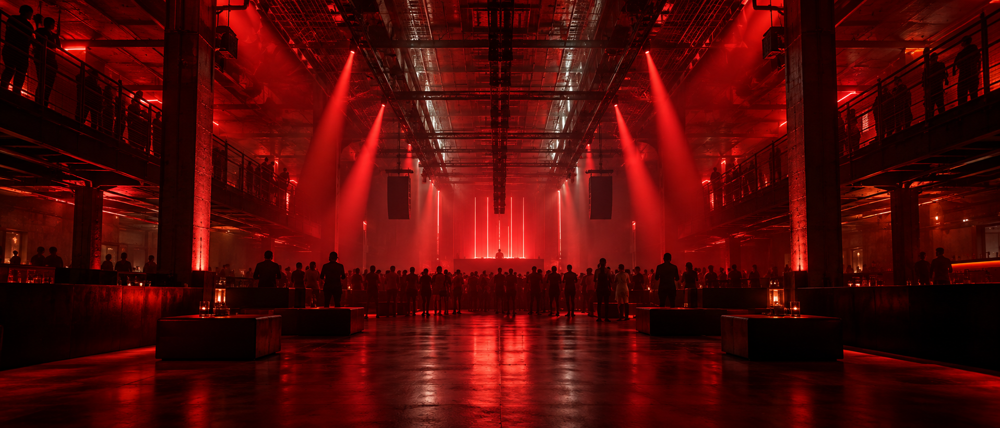

EL CENTRO
DEL PULSO.
Un espacio abierto, luz que acompaña y sonido que ocupa toda la sala.

Dos salas. Un mismo pulso.
El resto ocurre dentro.
El ruido de fuera termina en la puerta.
Selecciona una sesión y descubre su ritmo.
Sonidos precisos, bajos profundos y una pista que encuentra su propio lenguaje.
Programación ficticia · no hay venta de entradas
Un espacio abierto, luz que acompaña y sonido que ocupa toda la sala.
Un ambiente más íntimo para explorar nuevos sonidos y alargar la noche.
Este es un club ficticio de portfolio. No tiene una ubicación real ni ofrece venta de entradas. En una web comercial conectaríamos el acceso con la ticketera del local.
Los nombres, sesiones y horarios forman parte de una propuesta conceptual. Explora las tres sesiones para conocer el diseño.
El correo hola@umbral.example es de demostración.